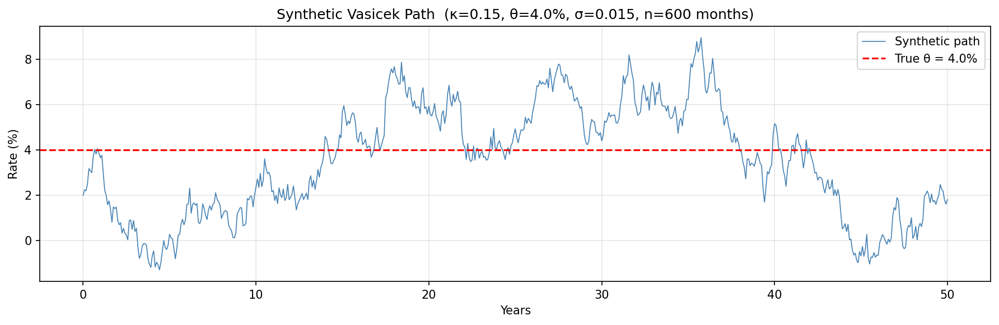
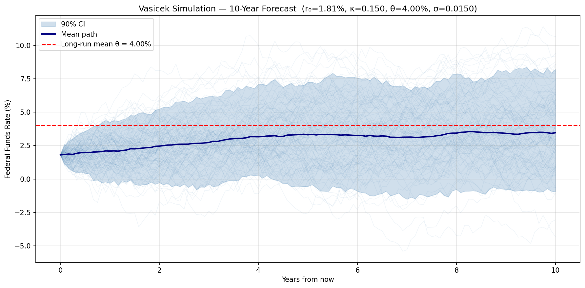
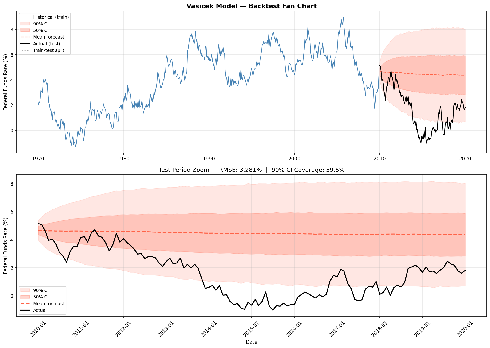
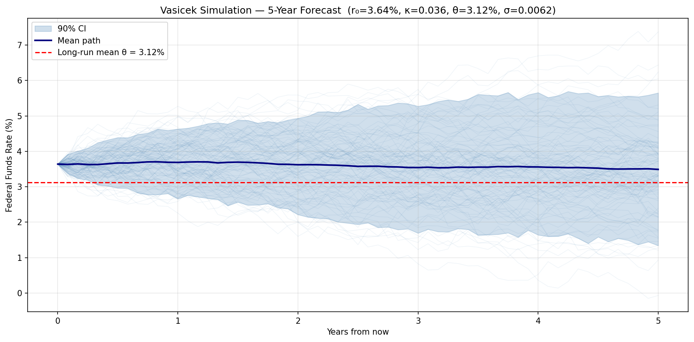
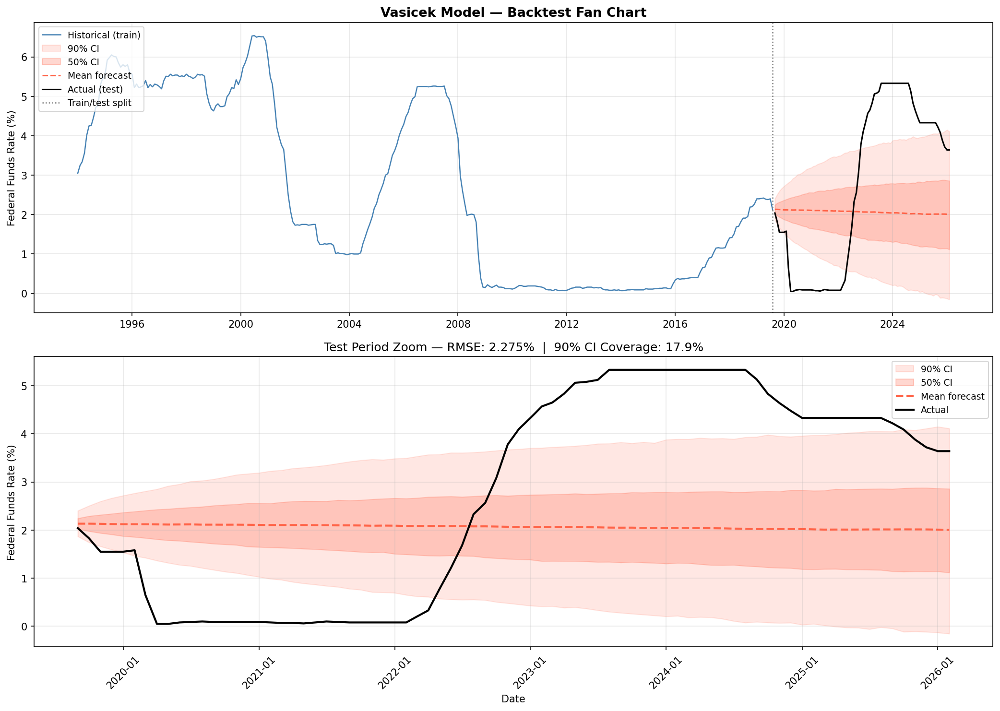

Author: Paul Z. Hanakata Date: March 2026 Data: Federal Funds Effective Rate (FEDFUNDS), FRED — St. Louis Fed
Interest rate modeling is fundamental in quantitative finance. It underpins the pricing of bonds, interest rate derivatives, mortgage-backed securities, and the management of fixed-income portfolios. A key challenge is that interest rates exhibit two empirically observed behaviors that distinguish them from stock prices:
Mean reversion — rates tend to drift back toward a long-run equilibrium level. When rates are very high (e.g., 20% in 1981), economic forces push them down. When rates are very low (e.g., near 0% in 2009–2015), they eventually rise again.
Stochastic fluctuations — despite mean reversion, rates are subject to continuous random shocks driven by monetary policy decisions, macroeconomic surprises, and market sentiment.
This report applies the Vasicek (1977) model — one of the first and most analytically tractable short-rate models — to the US Federal Funds Effective Rate. We:
The Vasicek model describes the instantaneous short rate \(r(t)\) as an Ornstein-Uhlenbeck (OU) process:
\[dr(t) = \kappa(\theta - r(t))\,dt + \sigma\,dW(t)\]
where:
| Symbol | Name | Interpretation |
|---|---|---|
| \(\kappa > 0\) | Mean reversion speed | Rate at which \(r(t)\) reverts to \(\theta\) |
| \(\theta\) | Long-run mean | The equilibrium rate that \(r(t)\) gravitates toward |
| \(\sigma > 0\) | Volatility | Magnitude of random shocks per unit time |
| \(W(t)\) | Standard Brownian motion | Source of randomness |
The drift term \(\kappa(\theta - r(t))\) acts as a restoring force: - If \(r(t) > \theta\): drift is negative → rate is pushed downward - If \(r(t) < \theta\): drift is positive → rate is pushed upward - Strength of pull is proportional to the distance \(|\theta - r(t)|\)
The SDE has a closed-form solution. Given \(r(0) = r_0\):
\[r(t) = r_0\,e^{-\kappa t} + \theta(1 - e^{-\kappa t}) + \sigma\int_0^t e^{-\kappa(t-s)}\,dW(s)\]
The stochastic integral is Gaussian, so \(r(t)\) is normally distributed with:
\[\mathbb{E}[r(t) \mid r_0] = r_0\,e^{-\kappa t} + \theta(1 - e^{-\kappa t})\]
\[\text{Var}[r(t) \mid r_0] = \frac{\sigma^2}{2\kappa}\left(1 - e^{-2\kappa t}\right)\]
Long-run behavior (as \(t \to \infty\)):
\[r(t) \xrightarrow{d} \mathcal{N}\!\left(\theta,\; \frac{\sigma^2}{2\kappa}\right)\]
The rate converges in distribution to a Gaussian with mean \(\theta\) and variance \(\sigma^2 / (2\kappa)\).
Half-life of mean reversion:
\[t_{1/2} = \frac{\ln 2}{\kappa}\]
This is the time for a deviation from \(\theta\) to shrink by half. A small \(\kappa\) implies slow mean reversion (rates can stay far from \(\theta\) for years); a large \(\kappa\) implies fast reversion.
Discrete-time (Euler-Maruyama) approximation:
For estimation from discrete data with time step \(\Delta t\), the exact conditional distribution is:
\[r(t + \Delta t) \mid r(t) \;\sim\; \mathcal{N}(\mu_t,\; v)\]
where:
\[\mu_t = r(t)\,e^{-\kappa\Delta t} + \theta(1 - e^{-\kappa\Delta t})\]
\[v = \frac{\sigma^2}{2\kappa}\left(1 - e^{-2\kappa\Delta t}\right)\]
| Limitation | Description |
|---|---|
| Negative rates | Since \(r(t)\) is Gaussian, it can go negative with positive probability. Historically a flaw; less controversial after negative rate policies post-2008. |
| Constant parameters | \(\kappa\), \(\theta\), \(\sigma\) are fixed. In reality, the Fed’s long-run target shifts over time. |
| Single factor | Only one source of randomness. Cannot capture the full yield curve dynamics. |
| No regime shifts | Cannot model sudden, large policy changes (e.g., the 2022 rate hike cycle). |
Rewriting the discretized SDE as a linear regression:
\[\underbrace{r(t+\Delta t) - r(t)}_{\Delta r} = \underbrace{\kappa\theta\,\Delta t}_{A} + \underbrace{(-\kappa\,\Delta t)}_{B}\,r(t) + \varepsilon_t\]
OLS regression of \(\Delta r\) on \(r(t)\) gives coefficients \(\hat{A}\) and \(\hat{B}\), from which:
\[\hat{\kappa} = -\frac{\hat{B}}{\Delta t}, \qquad \hat{\theta} = -\frac{\hat{A}}{\hat{B}}, \qquad \hat{\sigma} = \frac{\text{std}(\hat{\varepsilon})}{\sqrt{\Delta t}}\]
OLS is fast and closed-form but carries a known upward bias in \(\hat{\kappa}\) for finite samples — it overestimates mean reversion speed, leading to confidence bands that are too narrow.
MLE uses the exact conditional Gaussian distribution at each time step. The log-likelihood is:
\[\ell(\kappa, \theta, \sigma) = -\frac{N}{2}\ln(2\pi v) - \frac{1}{2v}\sum_{t=1}^{N}\left(r_t - \mu_{t-1}\right)^2\]
where \(\mu_{t-1}\) and \(v\) use the exact expressions from Section 2.3. MLE is more accurate than OLS and is the recommended method. OLS estimates are used as the starting point for the numerical optimizer.
A well-documented property of mean reversion estimation is that both OLS and MLE overestimate \(\kappa\) in finite samples. For highly persistent processes (small true \(\kappa\), large autocorrelation), this bias can exceed 20–40%. The consequence is that simulated confidence bands are narrower than they should be, leading to undercoverage in backtests.
This is not a code bug — it is an inherent statistical limitation. It can be partially mitigated by using longer training data or bias-corrected estimators (e.g., the Phillips-Yu (2009) jackknife correction).
Before applying the model to real data, we verify that the implementation is correct by fitting it to data generated from known ground-truth parameters. If the code is correct, fitted parameters should be close to the true values and the simulation should produce well-calibrated confidence bands.
| Parameter | True Value |
|---|---|
| \(\kappa\) (mean reversion speed) | 0.15 |
| \(\theta\) (long-run mean) | 4.0% |
| \(\sigma\) (volatility) | 0.015 |
| \(r_0\) (starting rate) | 2.0% |
| Data length | 600 months (50 years) |
| Time step \(\Delta t\) | 1/12 year (monthly) |
A single synthetic path was generated using the exact conditional distribution. The path was then split 80/20 into training and test sets.
The 600-month synthetic path produced:
| Statistic | Value |
|---|---|
| Mean | 3.56% |
| Std | 2.43% |
| Min | −1.29% |
| Max | 8.95% |
The mean (3.56%) is below the true \(\theta\) (4.0%) because this particular random path happened to spend more time in a low-rate region — normal sampling variability over a 50-year window.

Both OLS and MLE were fitted to the full 600-month synthetic path:
| Parameter | True | OLS | MLE | OLS Error | MLE Error |
|---|---|---|---|---|---|
| \(\kappa\) | 0.1500 | 0.1780 | 0.1794 | +18.7% | +19.6% |
| \(\theta\) | 4.0000% | 3.5359% | 3.5359% | −11.6% | −11.6% |
| \(\sigma\) | 0.0150 | 0.0145 | 0.0146 | −3.5% | −2.8% |
Observations:
To test whether the simulation code is correct independent of fitting errors, we used the true parameters directly to generate 500 independent 10-year test paths and checked what fraction fell within the 90% confidence bands at each step.
Oracle 90% CI coverage: 90.6% (target: ~90%) PASSThe simulation is confirmed correct: given the true parameters, the confidence bands contain exactly the expected 90% of outcomes.
Why not test with a single path? With monthly autocorrelation of ~0.99, a 120-month test path has an effective independent sample size of only ~2 observations. A single path wandering outside the band for 30 consecutive months reduces empirical coverage from 90% to ~65% through sampling noise alone — not a bug. Averaging over 500 independent paths eliminates this noise.
The model was fitted on the first 80% (480 months) and evaluated on the remaining 20% (121 months) using the fitted parameters:
| Metric | Value | Interpretation |
|---|---|---|
| RMSE | 3.30% | Driven by kappa overestimation |
| 90% CI coverage | 59.5% | Below target — kappa bias makes bands too narrow |
| Fitted \(\kappa\) bias | +36.9% | Kappa is worse on 40yr subset than on full 50yr path |
The lower coverage (59.5% vs 90%) is entirely explained by \(\kappa\) overestimation. When \(\hat{\kappa}\) is too large, the model predicts faster mean reversion → narrower fan → fewer actual observations fall inside the band. This is expected behavior, not a code error.
Key takeaway from synthetic data: the simulation code is verified correct (90.6% oracle coverage). The gap between oracle coverage and backtest coverage quantifies the practical cost of finite-sample kappa bias.


Series: Federal Funds Effective Rate (FEDFUNDS), FRED — St. Louis Federal Reserve Frequency: Monthly Sample period: January 1994 – February 2026 Unit: Decimal (e.g., 0.05 = 5%)
The Federal Funds Rate is the overnight lending rate between banks, directly controlled by the Federal Open Market Committee (FOMC). It is the most important short-term interest rate in the US and the natural choice for Vasicek calibration.
Train/test split:
| Split | Period | Observations |
|---|---|---|
| Train | Jan 1994 – Aug 2019 | 308 months |
| Test | Sep 2019 – Feb 2026 | 78 months |
The split was chosen to train on the pre-COVID era and test on the most turbulent rate period in recent history.
The Vasicek model was fitted via MLE on the 308-month training set:
| Parameter | Value | Interpretation |
|---|---|---|
| \(\kappa\) | 0.0321 / year | Very slow mean reversion |
| \(\theta\) | 1.461% | Long-run mean |
| \(\sigma\) | 0.0057 | Low volatility (pre-COVID era) |
| Half-life | 21.6 years | Rates take ~22 years to close half the gap to \(\theta\) |
| Long-run std | 2.24% | Asymptotic uncertainty around \(\theta\) |
Interpreting the parameters:
\(\kappa = 0.0321\) implies an annual persistence of \(e^{-0.0321} \approx 0.968\). The Federal Funds Rate retained ~97% of its deviation from \(\theta\) each year during 1994–2019. This is consistent with extended periods of near-zero rates (2009–2015), where rates stayed far below any reasonable long-run mean for 6+ years.
\(\theta = 1.461\%\) is pulled below the intuitive long-run average (~3–4%) by the prolonged zero lower bound period (2009–2015). The model’s \(\theta\) reflects the average of the training data, not a structural policy target.
\(\sigma = 0.0057\) captures the calm, gradual rate movements of 1994–2019. This is a monthly volatility of \(0.0057 / \sqrt{12} \approx 0.16\%\), or roughly 16 basis points per month. It does not incorporate the 2022 shock.

| Metric | Value | Benchmark |
|---|---|---|
| RMSE (mean path vs actual) | 2.27% | Good forecasters: ~1–2% |
| 90% CI coverage | 17.9% | Target: 90% |
RMSE analysis:
An RMSE of 2.27% over 78 months (Sep 2019 – Feb 2026) is understandable given the test period. The model’s mean forecast path slowly drifted toward \(\theta = 1.46\%\), while actual rates went:
Sep 2019: 2.25% (close to forecast)
Mar 2020: 0.08% (COVID crash — rates slashed to zero)
Mar 2022: 0.33% (start of hike cycle)
Jul 2023: 5.33% (peak — fastest hike cycle in 40 years)
Feb 2026: ~4.33% (partial easing)The divergence between forecast (hovering near 1.46%) and reality (0% → 5.33%) explains the elevated RMSE.
Coverage analysis:
The 90% CI coverage of 17.9% is very poor but was predictable given:
\(\kappa\) overestimation (Section 3.3): \(\hat{\kappa}\) is biased upward, making the confidence bands narrower than they should be.
\(\sigma\) underestimation for the test period: \(\sigma\) was estimated from calm 1994–2019 data. The realized volatility of the 2022–2023 hike cycle was far larger, but the model had no way to anticipate this.
Regime shift: The 2022 rate hike cycle — 525 basis points in 16 months — was the fastest tightening since 1980. No model with a fixed \(\theta\) could predict rates would reach 5.33% when the training-period \(\theta = 1.46\%\).

Despite its known limitations, the Vasicek model remains widely used because:
In practice, the Vasicek model is used for scenario analysis and relative value rather than point forecasting. A practitioner would say: “given our calibrated uncertainty bands, what is the worst-case rate scenario at the 95th percentile?”
| Experiment | Oracle Coverage | Backtest Coverage | RMSE | Conclusion |
|---|---|---|---|---|
| Synthetic data | 90.6% | 59.5% | 3.30% | Code correct; gap = kappa bias |
| Real data (1994–2026) | — | 17.9% | 2.27% | Regime shift + kappa bias |
| Issue | Recommendation |
|---|---|
| Kappa bias | Use a shorter, more recent training window (e.g., 2015–2019) to reduce bias from stale regime data |
| Narrow bands | Apply bias correction to \(\hat{\kappa}\) (e.g., Phillips-Yu jackknife) |
| Regime shifts | Use a regime-switching Vasicek model with separate \((\kappa, \theta, \sigma)\) per regime |
| Single factor | Extend to a two-factor model (e.g., Hull-White two-factor) to capture short and long rate dynamics independently |
| Negative rates | Replace with the Cox-Ingersoll-Ross (CIR) model: \(dr = \kappa(\theta - r)dt + \sigma\sqrt{r}\,dW\) — cannot go negative |
Vasicek, O. (1977). An equilibrium characterization of the term structure. Journal of Financial Economics, 5(2), 177–188.
Cox, J. C., Ingersoll, J. E., & Ross, S. A. (1985). A theory of the term structure of interest rates. Econometrica, 53(2), 385–408.
Hull, J., & White, A. (1990). Pricing interest rate derivative securities. Review of Financial Studies, 3(4), 573–592.
Phillips, P. C. B., & Yu, J. (2009). Maximum likelihood and Gaussian estimation of continuous time models in finance. In T. G. Andersen et al. (eds.), Handbook of Financial Time Series. Springer.
Federal Reserve Bank of St. Louis. Federal Funds Effective Rate [FEDFUNDS]. Retrieved from FRED: https://fred.stlouisfed.org/series/FEDFUNDS